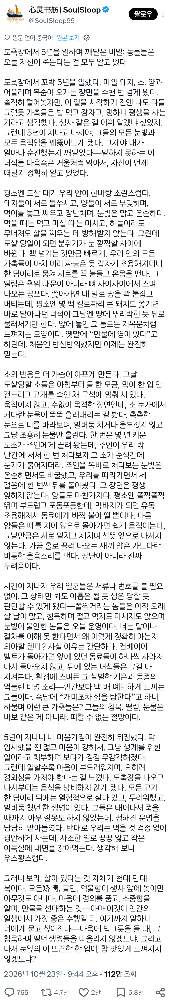

도살장에서 5년을 일한 중국인이 깨달았다는 것
댓글
깊이가 있는 글이네
명불허전 이백과 두보의 나라
괜시리 먹먹하네 기분이...
딴건 몰라도 고기는 절대 안남기지 ㄹㅇ
도살장에서 깨달음을 얻었네 대단하다
포정해우라는 말이 괜히 나온 게 아니지
고기 남기지 말고 포장해와라
진ㅁ자 좋은 글이네
중딩때부터 전역하고 좀더...10년 넘게 집이 식용견농장을했지
개들도 다 안다
올가미 걸면 버티면서 끌려옴
그 덕에 농축산자녀로 중고딩 다 학비면제로 다녔지
과학실청소로 급식비도 면제받고
맛있었으면 사람도 가공되었을거다 ㅠㅠ
왜 안돼고있다고 생각하지?!?
구제역때 돼지랑 소 반응이 극명하게 갈리는데 도축장은 다른갑네
제발 배양육 싸게 먹게 해주세요...
평생 살면서 짐승보다 나은 사람을 거의 못봤는데 사람이 아무렇지않게 짐승을 그렇게 잔인하게 이용하는게 납득하기 힘듬.
ㄹㅇㅍㅌ 동물보다 나은 사람을 본적이 없음
병신쓰레기들이 탐욕스러운 아가리로 고기 처먹고(몸에 필요한 이상으로 폭식함) 똥으로 만들어낼뿐이지
돈스파이크 이런사람들이 고기 존나 먹는것도 보기안좋았음. 필요할만큼 적당히 먹는것도 아니고 너무 탐욕스럽게 과식하니까. 요즘 먹방문화 이런것도 너무 질낮고 저질스러움
삶은 죽음 위에서 피어나니
'그러니 보라, 살아 있다는 것 자체가 천대 만대 복이다.'
두보와 이백의 나라...
돈오했네...
내가 저런데서 일하면 일할 때마다 기분이 이상할 거 같긴 하다. 저기가 알면서도 몸을 떠는 녀석들을 보내야한다는게
자발적 비건도 공감은 함
남한테 강요안하고, 오롯하게 본인만 그런거면
따거...
결국 나름대로의 신념으로 움직이는 채식주의/육식주의도 아닌 우리가 가져야 할 마음가짐은 거창하게 말하자면 기능적 환원으로 인한 생사여탈권과 위계적 폭력을 정면으로 직시해야한다는 것이고, 조금 풀어서 단순하게 말하자면 항상 감사하며 먹는 마음을 가져야한다...고 생각함.
인간이란 존재는 다른 종족 입장에서는 지옥을 주관하는 악마임
만약에 다른 종족이 세상을 지배하기 시작하고, 의식주에 어떠한 착취도 필요하지 않다면,
인간의 원죄는 끝 없는 심연으로 분류되지 않을까
병아리는 그냥 슬라이딩 타면서 갈갈인데
식용견 농장 방문한 적이 있었는데, 평생 개잡는 일만 하시던 주인 할아버지가 그러더라구. 신기하게도 저기 있는 수많은 개들중 누굴 잡을지 저들은 모를것인데도 동물은 스스로 죽을때를 안다는거야. 맘속으로 내일 저놈 잡아야겠다 생각하면 마음속으로 점찍어뒀던 개가 갑자기 밥을 안먹는데. 한번도 틀린적이 없대. 이 글 보면 진짜같아. 동물은 사람보다도 감각이 더 예민하다더니..
글 엄청잘쓰네
마지막 ㅋㅋㅋㅋㅋㅋㅋㅋㅋㅋㅋ 그래도 맛있는건 어쩔수없어.... 그러니 감사하고 먹자
그런일을 하는 분들에게도 감사하고 도축당하는 동물들 에게도 어느정도 감사한 마음으로 먹고있음..
가끔 시장골목 지나가면 안에 철장안에 닭들이 있고 사람들이 닭을 구매할때
주인이 대충 끄댕이잡고 꺼낼때 닭우는 소리가 한참 맴돌때도 있어서
닭집 지나갈땐 그 집은 눈으로 안보게됨.
중문학 수준 개높네
글빨 장난아니네
숨도 못쉬면서 읽었다
그냥 모든 식용 동물들에 미안하고 고마울 뿐.
깨달음은 쉽게 얻을 수 없지만 어디서든 얻을 수 있다
하루하루 감사하면서 살아야지
한끼니 식사가 당연하게 카드만 띡 긁으면 배달되는게 아니라는것을 상기하면서 말이야
음식 남기면 벌받는다는 어른들 말이 이런거였을까?